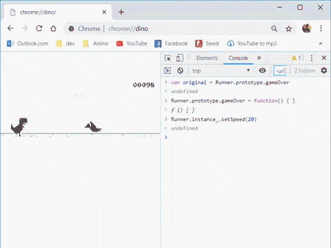

Hacking the Chrome Dino Game
Google Chrome (after v38.0.2125.122) includes an endles runner Dinosaur game which appears in the absense of internet connection.
The game helps to pass the time while waiting for the network to solve itself.
How to Play?
In the absense of Internet Connectivity:
Tap the space bar or the Up arrow key on your keyboard.
The dino will start running.
Like other endless runner games the goal is simple: run as far as you can, for as long as you can, until you crash.
Every 100 points marker is punctuated by a screeching high score blip.
Gamers who clear enough cactus to reach 450 points will then contend with flying pterodactyls as well as cacti. Use the down key to duck them.
The game enters a black and white mode after every multiple of 700 points till the next 100 points
You can pause the game by pressing the alt key.
You can make smaller leaps than usual by pressing the 8 key of the numpad or the spacebar lightly.

Hacking
Here's how to hack the game:
- Make sure you are on the No Internet Connection page.
- Right click anywhere on the page and select Inspect.
- Go to Console tab.
- For immortality, type:
Runner.prototype.gameover = function(){}and press enter. - For speed, type:
Runner.instance_.setSpeed(1000), or any other speed other than 1000 and press enter.